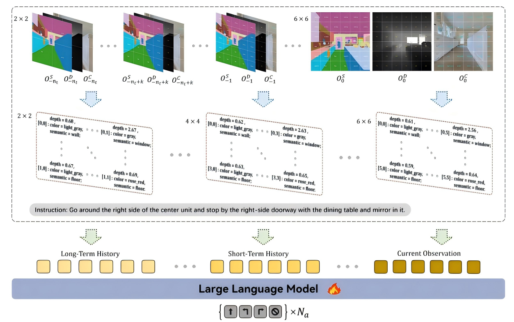
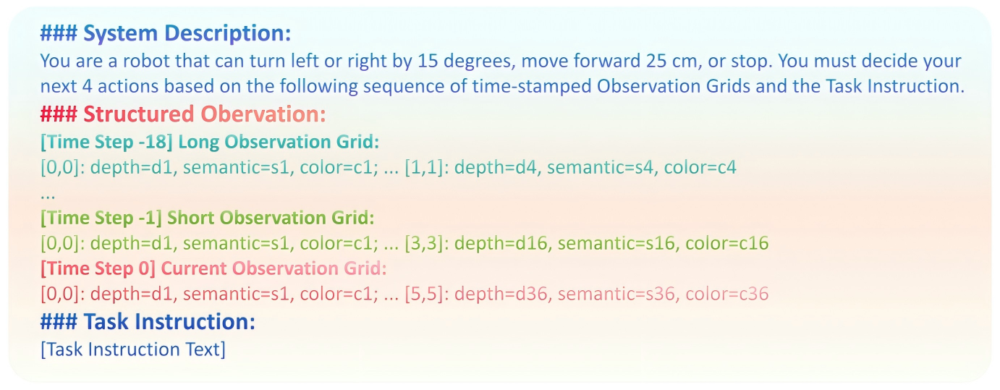
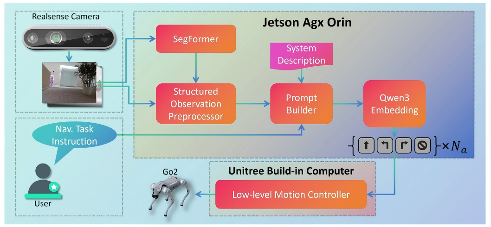
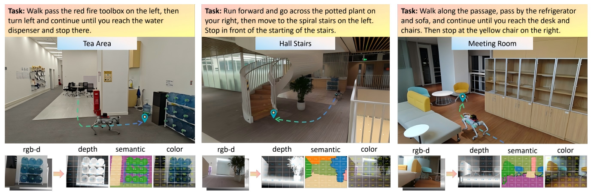

Vision-Language Navigation (VLN) requires an embodied agent to navigate complex environments by following natural language instructions, which typically demands tight fusion of visual and language modalities. Existing VLN methods often convert raw images into visual tokens or implicit features, requiring large-scale visual pre-training and suffering from poor generalization under environmental variations (e.g., lighting, texture).
To address these issues, we propose SOL-Nav (Structured Observation Language for Navigation), a novel framework that translates egocentric visual observations into compact structured language descriptions for efficient and generalizable navigation. Specifically, we divide RGB-D images into an N×N grid, extract representative semantic, color, and depth information for each grid cell to form structured text, and concatenate this with the language instruction as pure language input to a pre-trained language model (PLM). Experimental results on standard VLN benchmarks (R2R-CE, RxR-CE) and real-world deployments demonstrate that SOL-Nav significantly reduces the model size and training data dependency, fully leverages the reasoning and representation capabilities of PLMs, and achieves strong generalization to unseen environments.
SOL-Nav's performance on simulated benchmarks and real-world robotic deployments with Unitree Go2.
A pure-language approach to vision-language navigation that is efficient, generalizable, and deployable.
Eliminates scratch training of visual encoders. Only requires small-scale navigation data for PLM fine-tuning via LoRA, drastically cutting computational overhead.
Structured text avoids environmental noise (lighting/texture variations) and enables robust adaptation to unseen scenes without visual domain adaptation.
No complex multimodal encoders or fusion modules. Pure language model for navigation decision-making with lower computational cost.
Tiny model size (0.6B params) and low inference latency (0.8s on edge devices) for practical physical robot integration on Unitree Go2.
RGB-D observations are converted into structured textual descriptions with multi-resolution grids encoding depth, semantic, and color information, forming a pure language prompt for a pre-trained LLM.

Fig. 1. Pipeline of SOL-Nav. RGB-D observations are converted into structured textual descriptions with 2×2 / 4×4 / 6×6 multi-resolution grids (long/short-term history, current observation) encoding depth, semantic, and color information. The structured observation sequence, navigation instruction, and system description form a pure language prompt for action prediction.

Fig. 2. Structured Observation Language Prompt for LLM. The prompt integrates system description, structured observations at multiple time steps, and task instruction to guide the language model for action prediction.
SOL-Nav achieves state-of-the-art or comparable performance with a 0.6B parameter model — 10× smaller than SOTA multimodal models, without additional training data or waypoint predictors.
| Method | NE (↓) | OS (↑) | SR (↑) | SPL (↑) |
|---|---|---|---|---|
| SOL-Nav (Ours) | 5.11 | 72.9 | 53.6 | 49.2 |
| NaVILA | 5.37 | 57.6 | 49.7 | 45.5 |
| UniNaVid | 5.58 | 53.3 | 47.0 | 42.7 |
| Method | NE (↓) | OS (↑) | SR (↑) | SPL (↑) |
|---|---|---|---|---|
| SOL-Nav (Ours) | 6.87 | 60.5 | 48.6 | 42.3 |
| UniNaVid | 6.24 | 55.5 | 48.7 | 40.9 |
| Ablation | NE (↓) | OS (↑) | SR (↑) | SPL (↑) |
|---|---|---|---|---|
| Full Model (SOL-Nav) | 5.11 | 72.9 | 53.6 | 49.2 |
| Lower Res (4×4) | 6.84 | 43.4 | 34.5 | 29.8 |
| No Historical Obs | 7.81 | 39.4 | 26.5 | 21.9 |
| No Depth Info | 7.98 | 31.2 | 21.6 | 17.8 |
Deployed on Unitree Go2 with NVIDIA Jetson AGX Orin and Intel RealSense D435i. TensorRT quantization achieves 0.8s inference latency on the edge device.

Fig. 3. The SOL-Nav deployment pipeline. RGB-D input from the RealSense camera is processed through SegFormer for semantic segmentation, then converted to structured observations. The prompt builder integrates observations with system description and task instruction, feeding into Qwen3-Embedding (0.6B) for multi-step action prediction on the edge device.
Experiments across three distinct indoor scenarios — Tea Area, Hall Stairs, and Meeting Room — with varying lighting, furniture density, and terrain complexity.

Fig. 4. Real-world navigation experiments in three distinct scenarios. Each column shows the task instruction, environment photo, and multi-modal perception outputs (RGB-D, depth, semantic segmentation, and color mapping), demonstrating SOL-Nav's robustness across diverse environments.
If you find SOL-Nav useful for your research, please cite our paper.
@article{peng2026structured,
title={Structured Observation Language for Efficient and Generalizable Vision-Language Navigation},
author={Peng, Daojie and Ma, Fulong and Ma, Jun},
journal={arXiv preprint arXiv:2603.27577},
year={2026}
}